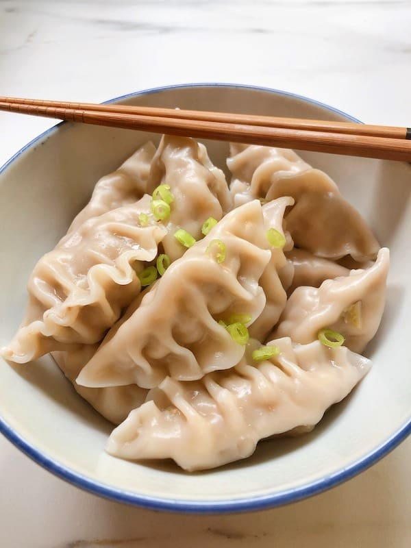

Chinese Dumplings Recipe

Luck is like having a rice dumpling fly into your mouth.
Steamed Dumpling (1 dumpling) contains 3.5g total carbs, 3.4g net carbs,
0.9g fat, 4.3g protein, and 41 calories.
Chinese people create a special yellow-tinged dumpling to represent gold
and wealth. It has been a tradition for centuries that is still implemented
in the present. Having a bite of this yellow-tinged dumpling is a symbol of
aligning yourself with wealth and prosperity
Ingredients
Dipping Sauce:
- ½ cup soy sauce
- 1 tablespoon seasoned rice vinegar
- 1 tablespoon finely chopped Chinese chives
- 1 tablespoon sesame seeds
- 1 teaspoon chile-garlic sauce (such as Sriracha®)
Dumplings:
- 1 pound ground pork
- 3 cloves garlic, minced
- 1 large egg, beaten
- 2 tablespoons finely chopped Chinese chives
- 2 tablespoons soy sauce
- 1 ½ tablespoons sesame oil
- 1 tablespoon minced fresh ginger
- 50 dumpling wrappers
- ½ cup vegetable oil for frying, or as needed
Procedure:
- Prepare dipping sauce: Combine soy sauce, rice vinegar, chives,
sesame seeds, and chile sauce in a small bowl. Set aside.
- Prepare dumplings: Mix pork, garlic, egg, chives, soy sauce, sesame
oil, and ginger in a large bowl until thoroughly combined.
- Place a dumpling wrapper on a lightly floured work surface and
spoon about 1 tablespoon of the filling in the middle. Wet the
edge with a little water and crimp together forming small pleats
to seal the dumpling. Repeat to form remaining dumplings.
- Heat 1 to 2 tablespoons vegetable oil in a large skillet over
medium-high heat. Place 8 to 10 dumplings in the pan and cook
until browned, about 2 minutes per side. Pour in 1 cup of water;
cover and cook until the dumplings are tender and pork is cooked
through, about 5 minutes.
- Repeat to cook remaining dumplings, adding more oil and water for each batch.
- Serve dumplings with dipping sauce.